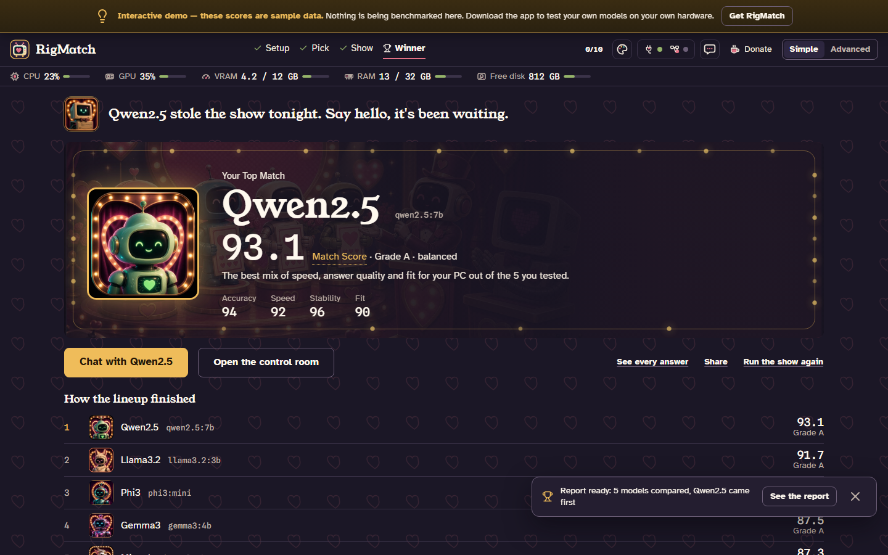
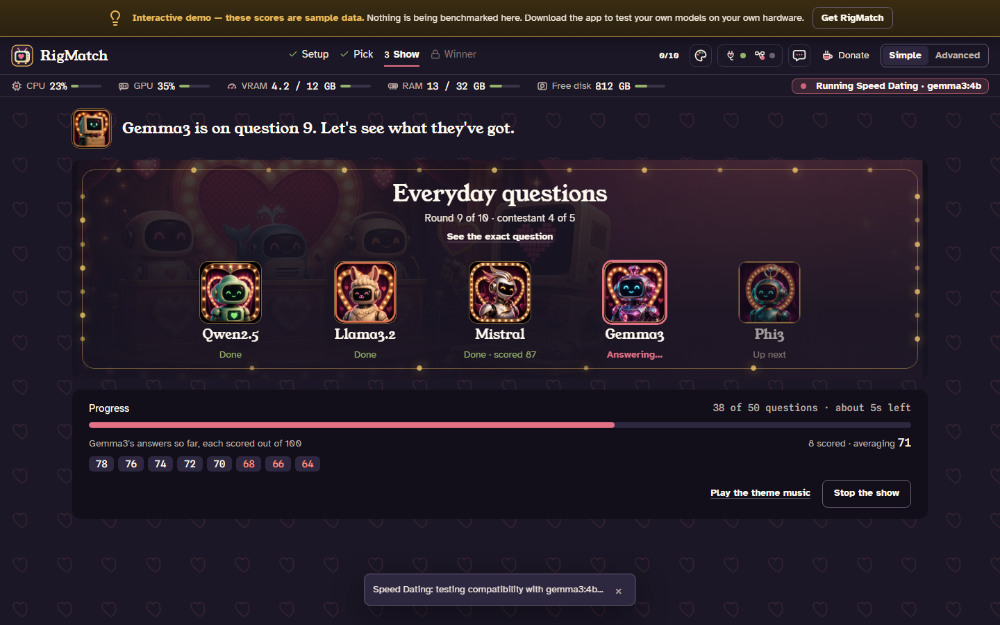
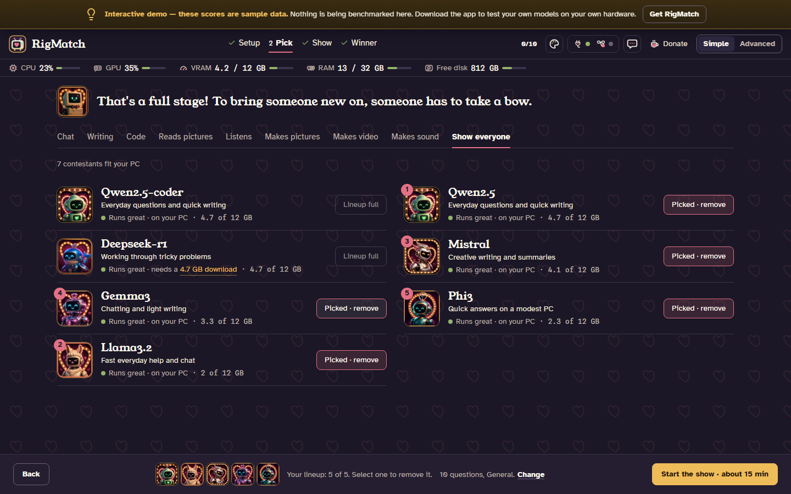
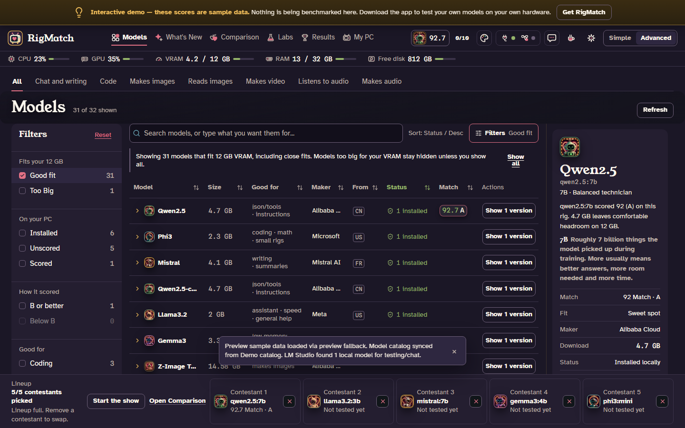
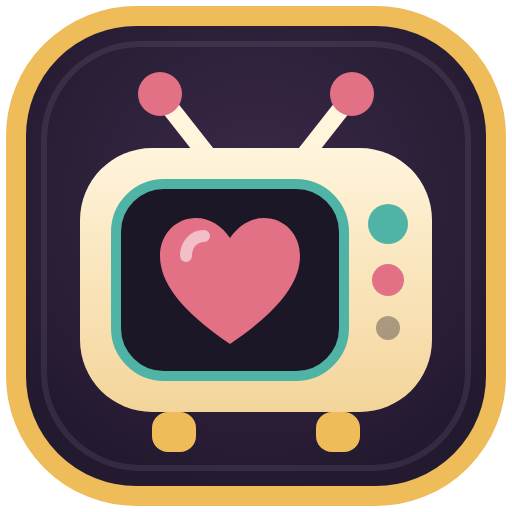

Press kit
Everything you need to write about RigMatch. Quote any of it, use the images as they are, and say what is not true or not clear so I can fix it.
Describing it
In one lineRigMatch tests AI models on your own PC and tells you which one runs best on it.
In a paragraphPicking a local AI model means reading about parameters, quantization and VRAM, and the answer is different on every computer. RigMatch skips that. It runs the same questions through each model you pick, on your own machine, and scores each one on answer quality, speed, stability and how well it fits your hardware. The winner is your Top Match. It is built as a dating game show: the models are contestants, the tests are speed dates, and a host narrates. It is free, has no account, and sends nothing anywhere.
In 140 charactersA free app that makes AI models compete on your own PC and crowns the best match. No account, no cloud.
Quick facts
- What it is
- A desktop app that benchmarks local AI models through Ollama and ranks them on the PC they will run on
- Version
- 0.9.7, a beta (October 2026)
- Platforms
- Windows, macOS (Intel and Apple Silicon), Linux (x64 and ARM64)
- Price
- Free. Every feature is open to everyone; donations are optional
- Needs
- Ollama, installed on the same computer. A graphics card is recommended
- Privacy
- No account, no telemetry, nothing leaves the computer. The one optional exception is a cloud judge you switch on yourself, which says so where you turn it on
- Source
- Source-available, not open source: the code is public so anyone can read it and check these claims, but it is not licensed for reuse
- Author
- Dave Euson, working alone
- Links
- Site · Browser demo · Source · Downloads · The Ajax report
What is different about it
- It measures on your machine. Leaderboards and model cards report speed and quality on hardware that is not yours. RigMatch runs the same questions on the computer the model will live on.
- Fit is part of the score. A model that answers well but barely fits your graphics card loses points for it, so the winner is one your PC can run comfortably.
- It is a show. Models are contestants and the winner gets a reveal. Someone who has never heard of VRAM can sit through it. Advanced Mode shows every measurement for people who want to check the work.
Worth knowing before you write about it
- It is a beta. There are few users so far, and bugs are likely. Release notes list what changed and what is known to be wrong.
- A score belongs to one machine. A Match Score of 92 on one PC says nothing about another, and the app says so.
- It tests the models you have. It works through Ollama. It does not test cloud models, because a data-centre model would always win and the result would mean nothing about your PC.
Screenshots
Free to use with a link back. These come from the browser demo, which uses sample scores, and each shows the demo banner saying so. The desktop app measures your own models.

The reveal: the Top Match, its score and how the lineup finished. Full size 
The speed dates: one model answers while the others wait their turn. Full size 
Choosing contestants: only models that fit your PC are offered. Full size 
Advanced Mode: the control room for people who want the numbers. Full size


Icon and colours



- Stage plum #1b1726
- Gold #efbc5a
- Pink #e37185
- Teal #4fb3a5
Questions
Ask on GitHub or find me at github.com/DaveEuson. I read everything, and I'll send a copy of the app, a test build or a longer explanation of how the scoring works to anyone covering it.